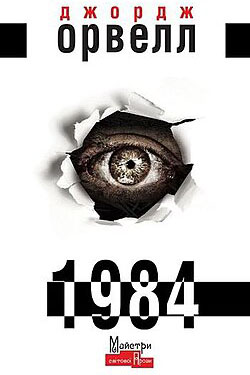
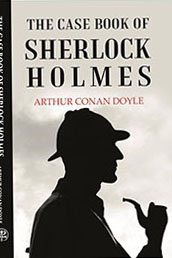

Класика світової літератури
Класичні книги завжди залишаються актуальними. Вони формують наш світогляд, змушують замислитися про вічні теми добра, зла, кохання та життя.

1984
Антиутопія Джорджа Орвелла, яка розповідає про тоталітаризм, контроль і пропаганду. Цей роман залишається актуальним і сьогодні, ставши класикою світової літератури.

Шерлок Холмс
Це історія про геніального детектива Шерлока Холмса, який вирішує найскладніші справи, використовуючи дедукцію та аналіз. Класика детективного жанру.
_(page_1_crop).jpg)
Аліса в Країні чудес
Казка, яка розповідає про маленьку дівчинку Алісу, що потрапляє в абсурдний та фантастичний світ. Її мандрівка сповнена сміху, логіки та пригод.